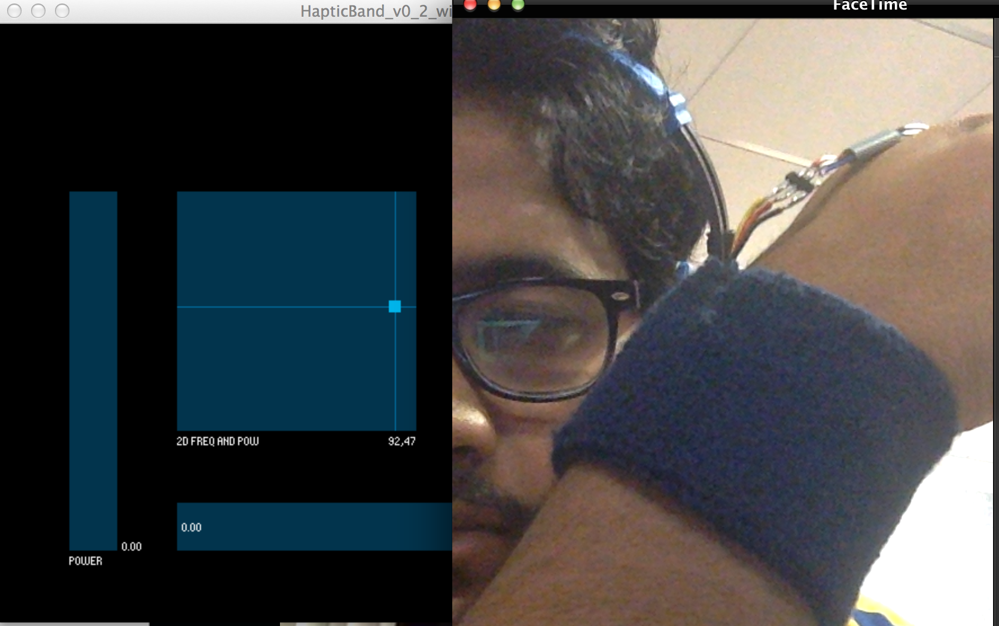

C Sense
C Sense is a system developed with a colleague Charles Smart , after investigating “how the sense of touch could be used to communicate emotions remotely in a variety of contexts, using haptic technology” which was a part of the project “CoSense" for Samsung Think Tank Team’s Outreach program by Human Interface Technology Lab, NZ at University of Canterbury.
Initial brainstorming introduced us to few ideas like:
- A T-shirt that could create the sense of an arm on the shoulder or a pat on the back.
- A shirt that constricts, to receive a virtual hug from someone.
- A glove that creates the feeling of holding hands,
- An Air Jet that can create a tickling sensation, for playful communication.
- A wristband that sends/receives emotional state readings and represents these as vibration patterns.
After reconsidering the Affinity Diagram and Behaviour segmentation , done at the time of emoApp project, we tried personas, scenarios and brainstormed then the idea of wristband that shares emotions through haptic sensations on the wrist to intuitively communicate emotional states looked promising as compared to others.
Hardware Prototype: We programmed Arduino board and attached vibrator motor, servo motor to it and fixed everything on a wristband. Aim was to create vibration patterns and send them to the band and attach a small bracelet to servo motor which can constrict and release it to give a sensation of tightening and loosening of the band.


To control vibrator motor and servo motor we designed an interface using Processing where the screen provides options of various patterns for vibration.

C Sense Android Application: Its a concept application we designed to work with C-Sense hardware to provide the functionality to the app. The app allows the user to pick the vibration patterns and choose who they share their emotion with.
We tested with users from an early stage of development, going through multiple iterations in response to the feedback
Results from User Testing: Users were able to easily distinguish between four different patterns. They could intuitively tell the difference between active and passive emotions and the heartbeat pattern of the vibration was the most empathising pattern as it felt like the user’s own pulse. We created the video that tells the story of using the C-Sense bracelet while streaming video from a Google Glass. Local User goes out for the day and sends his emotional states to Remote User.
Portfolio